Classic and Modern Tennis:
Comprehensive unified tennis knowledge base — Fundamentals, Stroke Analysis, Reference Library, and more
Classic and Modern Tennis:
John Yandell
Is Don Budge's Forehand GoodEnough for You?
Who was Don Budge and what was his forehand really like?
Who in this modern era would be crazy enough to model their forehand on Don Budge? Who was Don Budge anyway? Oh right, he was the guy who invented the concept of the Grand Slam (actually he invented the phrase!)--and then went out and won the first one.
OK fine, but Budge played with a wood racket that weighed over a pound! In those days you held onto the racket with naked wooden handles! They didn’t even have leather grips yet! There was no poly string! Not to mention you had to wear long white flannel pants!
Recently one of our subscribers posted something amazing that I had never seen. A link to a Don Budge instructional film made in the mid 1940s. (Click Here to see the whole thing.)
Is this film some curiosity demonstrating the primitive nature of tennis in a distant era? Budge’s technique must be completed antiquated, right?
No! This film is fascinating. The fundamentals of the way Budge hit his forehand are in many respects little different from so-called modern tennis. If 99% of the players in the world had this technique they would all be 1000% better.
We are talking unit turn and left arm stretch and an ATP-like backswing! Open stance! Reverse finishes! Budge even advocates a closed racket face for topspin, something that was once viewed as impossible. So were the 1940s more modern than modern?
How classical is classical and how modern is modern?
Let's not go too far. There is no doubt the game is way different today at the highest levels. Spin, velocity and contact height are all higher—way, way higher. 100mph forehands with 5000rpms that bounce above shoulder level.
But there are fundamental technical continuities. Guess what? Great athletes in all eras figure out similar things in similar circumstances.
In the previous article in this series, I looked at some of the classical elements in modern tennis--and vice versa (Click Here.) Now let’s do the same in more detail with the technical specifics of Budge's forehand.
If you believe the scornful words of “modern tennis" exponents no one could even play real tennis before extreme windshield wipers and massive topspin. Players like John McEnroe and Pete Sampras couldn't even compete against "modern" heavy ball baseliners.
So how could Don Budge? This is the background discussion that makes Budge's film so interesting. The extreme modern game propaganda loses credibility when tested against historical reality. The fundamentals in Budge's forehand are amazing.
Grip
An eastern grip with the hand on the wood and aligned with racket head.
But wait Budge has an antiquated eastern grip. Doesn't that disqualify him as "proto modern" right there? Well that grip is good enough for Roger Federer, Jo Willie Tsonga, and Juan Martin Del Potro among others.
Although other players of Budge's era and later had forehand grips turned toward the continental, Budge himself had a classic eastern with the palm of the hand aligned directly with the racket face and the string bed--a grip that falls within the range of effective grips in the pro game. And for players at all other levels, that grip is probably far more suitable and effective, as we see in this month's article from my new teaching methodology series. (Click Here.)
Why Eastern? The grip allows players to hit through with the racket more or less on edge--a basic semi-flat drive. That's a great basic swing pattern and one that even advanced club players can hit with great effect. (Click Here to see the forehand of Karsten Pop, who even in his 40s, is one of the best players in super competitive Marin county California.)
A modern unit turn with both hands on the frame.
It is also suited to the contact height of most club and league tennis--balls that are waist high to mid chest high at the highest. But an Eastern grip also allows players to hit the windshield wiper that happens on almost every ball in the pro game and is an important option for players at lower levels as they develop.
Preparation
The preparation Budge demonstrates is the most amazing part of this film. He starts with a unit turn with both hands on the racket. This takes his body to about 45 degrees to the net before the hands separate. Sound familiar? (Click Here.)
Next his hands separate and the left arm stretches across the body. All I can remember from the 1960's on was teachers advocating pointing the left arm at the ball! It wasn't really until high speed video came along that the left arm stretch was "discovered."
Or should we say, rediscovered? Here is the best player in the world demonstrating and advocating it in 1940. How did that not get into the teaching consciousness of the time for the future?
The left arm stretch and the ATP backswing--decades before the ATP existed.
But what is even more amazing is what happens with the racket arm and the backswing. There was a major stir--a revolution even when Brian Gordon and Rick Macci developed the concept of the "ATP backswing."
Every teacher on the internet suddenly stole the concept and acted like he had known it all along. (Click Here to Rick talk about this on Tennisplayer. Click Here to see Brian's more scientific explanation.)
In case you been off the planet for the last few years, the ATP backswing is with the racket head above the hand, the racket arm to the right of the body on a slight diagonal, and the racket face slightly closed to the court. Look at Budge! It's virtually the exact ATP position.
Maybe Rick and Brain secretly found this film before I did. Just kidding. What is interesting is that Brian established by his research not only that this was a commonality for top male pro, he showed why it's a biomechanical advantages in terms of the way the muscles work.
Who could know that Don Budge was turbo charging his forehand via the stretch shorten cycle in the 1940s? And then bringing that one-pounder through--no wonder he was widely perceived to hit a very heavy ball.
Natural adaptations to open stance.
Stances
Not to mention his "modern" use of stances. In the instructional components Budge demonstrates the perfect basic footwork to hit a neutral stance forehand--and also how to shift the weight with that stance pattern.
And many of the balls he hits--controlled rhythm rallies with a high level teaching pro are hit neutral. But you also see him shift stances effortlessly to adjust for various balls. Watch him adjust his feet and set up a mild semi-open stance on a higher ball. Watch hit semi-open when he moves wide.
It's a fantasy but what if we had extensive high speed film of him, Jack Kramer, Pancho Gonzales, even Bill Tilden, the same way we have of modern players in our High Speed Archives? Then we could actually study the evolution of technique in a much more detailed, more nuanced and more conclusive way.
Finishes
The classic eastern finish: simplicty pace, depth, consistency.
As I said one of the advantages of the eastern grip is the flexibility in the finishes. When you watch Budge in his film, you see mainly long, gorgeous, rhythmic, classic finishes.
Love these. If your grip is Eastern or close you can come through with the racket on edge or with a little bit of arm rotation and hit a topspin drive that maximizes velocity with just enough spin to keep it in and hit deeply and consistently.
Because there is not the same level of upper arm rotation as in a wiper, you have eliminated a huge variable, which although it has benefits, can also introduce crazy errors for lower level players. And look at the extension!
If you look at video of self-taught players on the Tennis Warehouse message boards, they often have extreme mechanical wipers. We all need to robotically copy the pros right?
So you see these guys no matter what kind of ball they are dealing with or trying to hit turning the racket over 180 degrees from sideline to sideline on every swing-- regardless of the lack of depth or pace or control--or the heinous errors. Sad yet funny.
Even under controlled conditions a hint of finish variety.
You don't have that problem with the more classic finish. But then that goes back to grip. If you go under the handle you have to wiper much more to get the racket head through the swing. Why not have the option to play the ball that suits the situation--especially below the pro level--ie especially for 100% of all people reading this article.
In fact, it looks very much like the finish in the great Welby Van Horn's teaching system. (Click Here.) He lived to be 94 and I feel very lucky that we were able to capture his approach on Tennisplayer. Guess what? He was a contemporary of Don Budge.
Other Finishes
Having said all that, even in the staged, controlled rallies in the film, you see how easily Budge can alter the swing to fit the situation. On some forehands the racket head turns over much more, a partial wiper.
There are also a couple of natural "reverse" finishes where the racket comes back to the same side as it started. (For the original article from Robert Lansdorp that started the Reverse Finish craze in our era, Click Here.)
Don Budge advocating the impossible closed face.
Closed Face
And then there is the closed face. A lot of "modern" research concluded that this just wasn't even possible. The ball would obviously go down into the net.
It took high speed video in the 90s to show that well, no, it was not only possible but common. Our contributor Kerry Mitchell was way ahead of his time (or maybe the ultimate retro thinker...) in advocating this years ago. (Click Here.)
The interesting thing is that all these elements: different stances, finishes, racket face angles happen at all in this highly structured instructional film. Again makes me long to film a few matches on the different surfaces.
Grass was lower bouncing at the time. But what about filming Budge on red clay winning the French? Wow. I bet we would learn some stuff then...
If I still played with a wood racket maybe I'd take the grip off it just to feel what the wood itself actually felt like when you found the exact sweet spot.
John Yandell is widely acknowledged as one of the leading videographers and students of the modern game of professional tennis. His high speed filming for Advanced Tennis and Tennisplayer have provided new visual resources that have changed the way the game is studied and understood by both players and coaches. He has done personal video analysis for hundreds of high level competitive players, including Justine Henin-Hardenne, Taylor Dent and John McEnroe, among others.
In addition to his role as Editor of Tennisplayer he is the author of the critically acclaimed book Visual Tennis. The John Yandell Tennis School is located in San Francisco, California.
Additional figures (from header/footer of source docx):

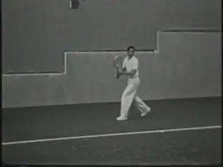

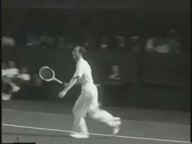
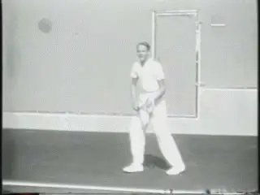
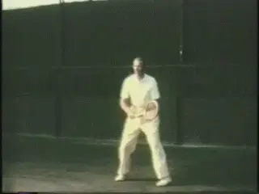
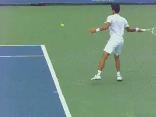
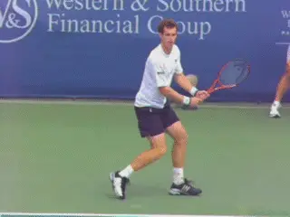
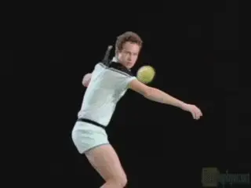

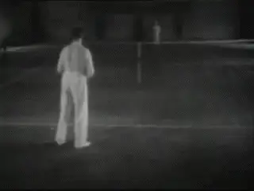
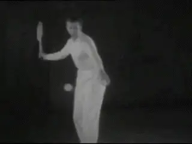
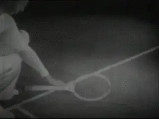
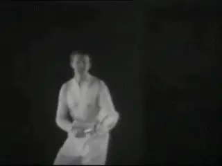
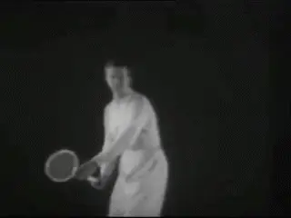
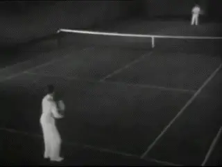
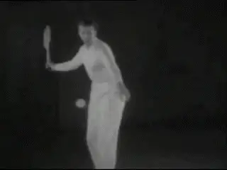
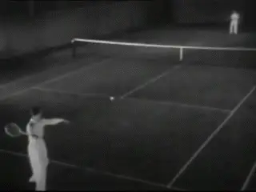
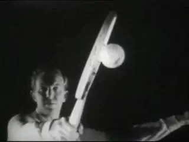

Source: tennisplayer.net archive — John Yandell-Classic and Modern Tennis-Is Don Budge's Forehand Good enough for you.docx (John Yandell teaching library, 2002-2022). Extracted and rendered as HTML for Tennis Future Lab.